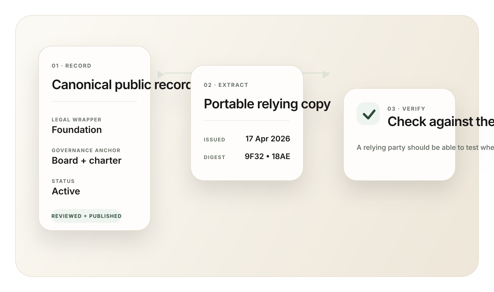

Legal wrapper
The legal or quasi-legal entity behind the governance system.

Governed Digital Entity Register
Browse the entities already researched, inspect their wrapper and jurisdiction, and see the path from structured research to reviewed public records.
GDER should start by showing the product surface itself: the entities, the record logic, and what eventually becomes reviewable and publishable.
Current truth
The list below is the current structured research set behind GDER. It is not yet the final published register.
Current research set
No researched entities match the current search.
What each entry should make legible
The legal or quasi-legal entity behind the governance system.
The named framework, process, or forum that governs the entity.
Where the structure sits and what supportable control or treasury layer exists.
What exists now, what changed, and what can actually be relied on.
Record system
The public surface is not a loose profile layer. It is a linked record system designed for inspection: canonical record, portable extract, and a verification path back to source.
The reviewed public record is the canonical reference surface.
Certified and historical outputs make the record portable without becoming loose summary copy.
A relying party can test whether the extract still resolves back to the record.


Add / review your entity
Review is the secondary action on the site. Once someone understands the register logic and sees the current research set, they should be able to request review for an entity that needs to move toward an admitted public record.
What GDER is not
This opens a prefilled email so we can qualify fit, evidence set, and review path directly.
Trust boundary
GDER is a governed, publicly inspectable register. It is not presented as a sovereign registry replacement.